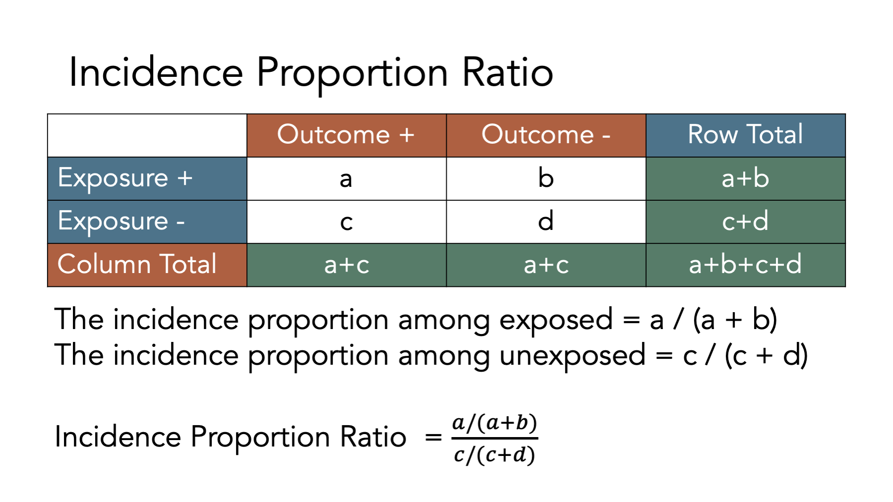

44 Measures of Association
This chapter is under heavy development and may still undergo significant changes.
As a reminder, we said that epidemiology is usually defined as something like, “the study of the occurrence and distribution of health-related states or events in specified populations, including the study of the determinants influencing such states, and the application of this knowledge to control the health problems”1 in the Introduction to Epidemiology chapter. In the chapter about measures of occurrence, we focused on some of the ways we can measure the occurrence of those health-related states or events. In this chapter, we will start discussing ways we can measure the distribution of those health-related states or events. In other words, are those health-related states or events equally likely for everyone, or are they more for some people than others. However, we first need to review a couple of new topics that will help us later in our discussion about measures of association.
🗒Side Note: Writing (and reading) “health-related states or events” over and over starts to get cumbersome after a while. Therefore, we will often just use “conditions” or “events” in the text below instead. Further, the methods we discuss below can just as easily be applied to better understanding characteristics of populations that would not typically be described as a “condition” or “event”. For example, sex assigned at birth or ethnicity.
44.1 Exposures and outcomes
Our discussion of associations will inevitably lead us to to compare two or more conditions in our population of interest. For example, we might want to compare diabetes and state of residence to better understand if diabetes is more common in some states than others. It is commonplace to refer to one of the conditions we are comparing as the outcome and the other condition(s) as the exposure(s). For example, we might refer to diabetes as the outcome and state of residence as the exposure. By extension, the members of the population who are living with the exposure(s) are commonly referred to as the exposed group, or simply the exposed.
In epidemiology, the terms exposure and outcome are used all of the time. Both terms can refer to pathogens, environmental conditions, behaviors, traits, social conditions, diseases or health conditions, and/or treatments or interventions. Table 44.1 below contains some examples.
| Term | Examples |
|---|---|
| Pathogens | Tapeworm, Malaria, Ringworm, Streptococcus, and HPV |
| Environmental condtions | Smoking, Physical Activity, Sleep, and Sexual behaviors |
| Behaviors | Genotype and Sex assigned at birth |
| Social conditions | Discrimination, Neighborhood characteristics, and Culture |
| Diseases or condtions | Diabetes, Heart disease, and Cancers |
| Treatments or interventions | Medications, Smoking cessation programs, and Laws and policies |
So, what distinguishes an exposure from an outcome? Generally speaking, we do. When we are exploring the relationship between two variables in our data, it is customary to call the first variable an exposure if we believe it is the cause of the second variable, and to call the second variable an outcome if we believe it is caused by the first variable. We haven’t formally defined causes and effects yet, and we won’t until the part of the book about causal inference, but our intuitive/colloquial understanding of cause and effect should be sufficient for now.
With that in mind, virtually any of the examples from table 44.1 could reasonably be thought of as an exposure or an outcome depending on the question we are trying to answer, and our beliefs about how causes and effects work in the world around us. For example, if we believe that unprotected sex is a cause of HPV infection, then we may want to measure the association between unprotected sex (an exposure) and HPV infection (an outcome). However, we could also believe that HPV infection is a cause of cervical cancer. In that case, we may want to measure the association between HPV infection (an exposure) and the existence of cervical cancer (an outcome). Notice that HPV infection is not inherently an exposure or an outcome. Rather, we labeled it as an exposure or an outcome based on the question we were asking and our beliefs about its relationship to the variable we were comparing it to.
The paragraph above may have left you with the impression that measuring associations is the same thing as measuring causes and effects. That is not the case! In fact, you may already be familiar with the popular saying “association does not equal causation” or “correlation does not equal causation.” These sayings are correct. There is virtually an infinite number of possible examples of statistical associations that have nothing to do with cause and effect relationships. Even in cases were there isn’t necessarily a cause and effect relationship between two variables being studied, the terms exposure and outcome are still frequently used – albeit somewhat arbitrarily – in practice. In this book, we will also use the terms exposure and outcome broadly, and the terms do not necessarily imply a cause and effect relationship.
44.2 Contingency tables
Many of the concepts and measures that will will explore in this chapter (e.g., incidence proportion differences, incidence proportion ratios, etc.) are easier to understand when we relate them to contingency tables, which are a commonly used tool in epidemiology. Contingency tables are also frequently called 2x2 tables (spoken as “two by two tables”) or crosstabs.

The figure above shows the classic 2x2 contingency table. The “2x2” part is meant to indicate that the table has two rows of data values (not including the column headers) and two columns of data values (not including the row headers), which is the most common contingency table configuration used in epidemiology. However, we can technically construct contingency tables with as many rows and columns as we would like. In the classic 2x2 configuration, the first row of values corresponds to people who were exposed to our first condition of interest and the second row of values corresponds to people who were not exposed to our first condition of interest (i.e., unexposed). Similarly, the first column of values corresponds to people who had the outcome we are interested in and the second column of values corresponds to people who did not have the outcome we are interested in. It is important to note that we can theoretically reconfigure the rows and columns of our contingency table anyway we would like, but this configuration is the configuration that the formulas you will find in nearly every epidemiology textbook will assume you are using.
To illustrate how 2x2 contingency tables work, let’s return to our simulated data from the measures of occurrence chapter that included information from 10 people gathered over a 12-month period.

If we came along and did a study of this group of people in month 2, the prevalence of disease would equal the number of people with disease divided by the number of people in the sample. In this case, that would be 2 people (01 and 02) divided by 10. Now let’s add another dimension to this figure. Specifically, let’s say that persons 02, 04, 06, 08, and 10 were exposed to some exposure of interest (shaded purple in the figure below).

Under these conditions, how would we complete a 2x2 contingency table about this population?

Let’s fill it in together, starting at the top-left corner.
- Cell
acorresponds to people who were exposed and had the disease. Person 02, person 04, and person 06 were in the exposed group and had disease. - Cell
bcorresponds to people who were exposed and did not have the disease. Person 08 and person 10 were in the exposed group and did not have disease. - Cell
ccorresponds to people who were not exposed and had the disease. Person 01, person 03, and person 05 were not in the exposed group and had disease. - Cell
dcorresponds to people who were not exposed and did not have the disease. Person 07 and person 09 were not in the exposed group and did not have disease.

To calculate many of the measures we will discuss below, we will also need to fill in the marginal totals – the row, column, and overall totals located on the margins of the table. Once we fill in the contingency table, we can easily calculate many measures of interest in epidemiology.

For example, in the figure below we add the simulated population’s values back the contingency table and calculate the total for the first row. There were 5 people who were exposed and developed disease, and there were two people who were exposed and did not develop disease. Therefore, the total number of people who were exposed is 3 + 2 = 5.

Before moving on, try to fill out the rest of the contingency table in your head. The answers are shown in the figure below.

Now that we have developed an intuition for what contingency tables are and how to fill them in, let’s learn how to create them in R.
44.3 Building contingency tables in R
There are many different possible ways to create contingency tables in R. We prefer building them as a matrix object. We haven’t talked much about matrix objects up the this point, and for the most part, we don’t need to use them very often. However, they do provide a convenient structure for replicating contingency tables in R.
# Load the packages needed for the code below.
library(dplyr, warn.conflicts = FALSE)
library(freqtables)44.3.1 Matrix dimensions
In R, a matrix is a vector with 2 dimensions. What does that mean? Perhaps it’s best to learn what it means with through the use of an example. Here is a character vector:
## [1] "a" "b" "c" "d"If we want to select element a, we can use bracket notation. The first element in the character vector, v, is a. So, we can select it with the code v[1], which means, “return the first element of v”.
## [1] "a"Next, let’s create a matrix with character values. Remember, all elements of a vector must be of the same type (character, numeric, etc.), and a matrix is a special type of vector. So, all elements of a matrix must be of the same type. Below we will create a matrix object using almost the exact same code we used above. The only difference is that we pass the code used to create our character vector, c("a", "b", "c", "d"), to the matrix() function.
# Create a matrix object called mat
mat <- matrix(c("a", "b", "c", "d"))
# Print the value stored in mat to the screen
mat## [,1]
## [1,] "a"
## [2,] "b"
## [3,] "c"
## [4,] "d"Notice that this matrix has 4 rows and 1 column by default. This time, we need to add both coordinates (dimensions) to our bracket notation if we want to select the “a” element. We do so by typing the matrix name followed by square brackets that contain the row we want, a comma, and the column we want. So, matrix_name[row, column].
# Print the value stored in the first row and first column of mat to the screen
# Note. In this case, mat[1] would return the same result, but that won't be
# true when we have more complex matrices
mat[1, 1]## [1] "a"44.3.2 Matrix to contingency tables
Now, to make our matrix look and behave like a contingency table, we need our matrix to have 2 rows and 2 columns instead of 4 rows and 1 column. To make that happen, we will first adjust either the ncol or nrow argument to the matrix() function.
# Create a matrix object called matrix_ct that has 2 columns instead of 1
matrix_ct <- matrix(
c("a", "b", "c", "d"), # Enter values in this order
ncol = 2
)
# Print the value stored in matrix_ct to the screen
matrix_ct## [,1] [,2]
## [1,] "a" "c"
## [2,] "b" "d"Or…
# Create a matrix object called matrix_ct that has 2 rows instead of 4
matrix_ct <- matrix(
c("a", "b", "c", "d"), # Enter values in this order
nrow = 2
)
# Print the value stored in matrix_ct to the screen
matrix_ct## [,1] [,2]
## [1,] "a" "c"
## [2,] "b" "d"Unfortunately, neither of the solutions above get us exactly the result we are looking for. Can you spot what’s wrong with them?
Remember, we said above that the order of the cells in our contingency tables matters. The formulas we will find in nearly every epidemiology textbook will assume that our contingency tables are configured with a and b in the first row and c and d in the second row. However, the matrix above is configured such that a and c are in the first row and b and d are in the second row. That’s because, the byrow argument to the matrix() function is set to FALSE by default. This means that R will fill in the matrix values starting at location [1, 1] and filling down columns. We want R to fill in the matrix values starting at location [1, 1] and filling across rows. We do that by changing the default byrow = FALSE to byrow = TRUE.
# Create a matrix object called matrix_ct that has 2 rows instead of 4
matrix_ct <- matrix(
c("a", "b", "c", "d"), # Enter values in this order
nrow = 2,
byrow = TRUE
)
# Print the value stored in matrix_ct to the screen
matrix_ct## [,1] [,2]
## [1,] "a" "b"
## [2,] "c" "d"Now, we have a matrix object that looks and behaves like a standard 2x2 contingency table.
44.3.3 Add row and column names
To make our matrix even easier to read and work with, let’s go ahead and add row and column labels. We do so using the dimnames() function. The dimnames() function is a little bit different than most of the functions we have used so far in that we can use it to get or set values. Meaning, if we only pass an R object (i.e., vector, data frame, or matrix) to the dimnames() function, then it will get – or return – the object’s dimension labels to us. Alternatively, we can also use the dimnames() function to set or assign labels to the object’s dimensions. Let’s learn how to get and set labels below.
Above, we said that our matrix has a row dimension and column dimension. So, passing our matrix to the dimnames() function below will return the labels assigned to the rows and columns of the matrix.
## NULLOf course, we haven’t set the labels of the rows and columns of matrix_ct, so R simply returns a NULL value (i.e., the lack of a value). Luckily, we can easily set the dimension labels with the dimnames() function as well.
Before attempting to set our dimension labels, however, let’s first take a look at how many dimensions the matrix_ct object contains.
## [1] 2 2It probably isn’t immediately obvious, but R is telling us that matrix_ct has 2 rows (the first number) and 2 columns (the second number) in the result above. This should make sense if we take another look at matrix_ct.
## [,1] [,2]
## [1,] "a" "b"
## [2,] "c" "d"We can see above that matrix_ct has 2 rows ([1,] and [2,]) and 2 columns ([,1] and [,2]). How should we label them? Well, remember that the value "a" corresponds to people who were exposed and had the outcome. So, we could reasonably label [1,] as Yes (i.e., exposed) and [,1] as Yes (i.e., had the outcome). Using the same logic, we could also reasonably label [2,] as No (i.e., unexposed) and [,2] as No (i.e., did not have the outcome).To do so, we create a list that contains the row and column labels, and then assign them to matrix_ct.
We create a list object in R with the list() function. We first pass a vector of values we want to assign to the rows of our contingency table to our list, and then pass a vector of values we want to assign to the columns of our contingency table to our list.
# Create a list object called my_dimnames that contains labels we want to
# assign to the rows and columns of our contingency table
my_dimnames <- list(
c("Yes", "No"), # Row names
c("Yes", "No") # Then column names
)
# Print the value stored in my_dimnames to the screen
my_dimnames## [[1]]
## [1] "Yes" "No"
##
## [[2]]
## [1] "Yes" "No"We can then set or assign that list of labels to matrix_ct like this:
# Assign the values stored in my_dimnames as the row and column labels of matrix_ct
dimnames(matrix_ct) <- my_dimnames
# Print the value stored in matrix_ct to the screen
matrix_ct## Yes No
## Yes "a" "b"
## No "c" "d"That makes our contingency table a little easier for us to read and work with. However, there could still be some ambiguity as to what each Yes and each No correspond to. We can improve the labels by passing a named vector to the my_dimnames list like this:
# Create a list object called my_dimnames that contains labels we want to
# assign to the rows and columns of our contingency table
my_dimnames <- list(
Exposure = c("Yes", "No"), # Row names
Outcome = c("Yes", "No") # Then column names
)
# Print the value stored in my_dimnames to the screen
my_dimnames## $Exposure
## [1] "Yes" "No"
##
## $Outcome
## [1] "Yes" "No"We can once again set or assign the values stored in my_dimnames as row and column labels in matrix_ct.
# Assign the values stored in my_dimnames as the row and column labels of matrix_ct
dimnames(matrix_ct) <- my_dimnames
# Print the value stored in matrix_ct to the screen
matrix_ct## Outcome
## Exposure Yes No
## Yes "a" "b"
## No "c" "d"See how the labels make our contingency table easier to read? Finally, we can put all the steps above together into one code chunk like this:
# Assign row and column labels to matrix_ct
dimnames(matrix_ct) <- list(
Exposure = c("Yes", "No"), # Row names
Outcome = c("Yes", "No") # Then column names
)
# Print the value stored in matrix_ct to the screen
matrix_ct## Outcome
## Exposure Yes No
## Yes "a" "b"
## No "c" "d"44.3.4 Add margins
Finally, let’s add marginal totals to our contingency table. Because we can’t add letters together, let’s use the numbers from the simulated population of people.
# Create a contingency table called matrix_ct
matrix_ct <- matrix(
c(a = 3, b = 2, c = 3, d = 2),
ncol = 2,
byrow = TRUE
)
# Assign row and column labels to matrix_ct
dimnames(matrix_ct) <- list(
Exposure = c("Yes", "No"), # Row names
Outcome = c("Yes", "No") # Then column names
)
# Print the value stored in matrix_ct to the screen
matrix_ct## Outcome
## Exposure Yes No
## Yes 3 2
## No 3 2Next, let’s add the marginal totals to matrix_ct. The easiest way to do so is by passing our contingency table to the addmargins() function.
# Create a contingency table called matrix_ct_margins
# It is the matrix_ct with marginal totals added.
matrix_ct_margins <- addmargins(matrix_ct)
# Print the value stored in matrix_ct_margins to the screen
matrix_ct_margins## Outcome
## Exposure Yes No Sum
## Yes 3 2 5
## No 3 2 5
## Sum 6 4 10And now we have a contingency table, stored as an R object, that we can use to calculate many measures of association we are interested in. But before doing so, we need to quickly review one additional concept – probability.
44.4 Probabilities
As previously mentioned, statistics and statistical inference are critical tools in the practice of epidemiology, and probability theory is provides a foundation for statistics. Therefore, it is important for us to have a least a basic understanding of probability theory. Unfortunately, a complete review of probability theory is beyond the scope of this book. However, we will discuss a few of the most fundamental aspects of probability theory here and elsewhere in the book.
When we talk about the probability of an event in everyday speech, we are typically making a statement about how likely it is that the event has already occurred, or how likely it is that it will occur at some point in the future. For example, we may say that there is a 90% chance that a person has a certain disease, or that there is a 50-50 chance of surviving a particular condition, or that 9 out of 10 people who drop out of our study are experiencing adverse outcomes. As these examples illustrate, we can talk about probabilities in a number of different ways. However, it is mathematically easiest to work with probabilities that are recorded as fractions, which are then converted to decimals. So, we will typically write probabilities as a number between 0 and 1, where the more likely an event is to occur, the closer the probability is to 1. and the less likely an event is to occur, the closer the probability is to 0.
Additionally, it will be useful for us to distinguish between at least two conceptually different categories of probability.
Frequency probability is the limit of the relative frequency of an event in a sequence of N random trials as N approaches infinity.1 For example, if we flip a coin a really large number of times – a nearly infinite number of times – then how frequently does the coin come up heads? The proportion of heads (or tails) would constitute a frequency probability. Spoiler alert: It’s approximately 50%. Central to the concept of frequency probability is the idea that a process is repeated a large number of times. Further, frequency probabilities may or may not have anything to do with the beliefs that humans have about how likely an event is to occur (at least in theory). Rather, frequency probabilities are simply the result of counting the occurrence of something a large number of times (at least in theory). This is the conceptualization of probability that plays a central role in the majority of the statistical tool and procedures we use in epidemiology.
Subjective probability is a measure, ranging from 0 to 1, of the degree of belief about the occurrence of an event.1 For example, if we say there is a 50% probability of rain today, then we are making a subjective probability statement. We believe that it is just as likely to rain today as not. This statement can clearly not be a frequency probability. There is no way for us to repeat today a near infinite number of times and then count how times it rained. Today only occurs 1 time. Although this conceptualization of probability is widely considered less objective than frequency probabilities, it is probably the conceptualization that is most often implied when we humans discuss the probability of events in everyday conversation.
The gap between the frequency probabilities at the center of many, if not most, epidemiologic methods and the subject probabilities we express colloquially is the source of a great deal of confusion for many people. In this book, when we use the word “probability,” we are generally referring to frequency probabilities. Further, we will attempt to explicitly state when we are using the word “probability” in the more subjective sense.
44.4.1 Frequency probabilities
Let’s start with an example. The approximate frequency of Alzheimer’s Disease among Americans age 65+, by age group, is given in table 44.2. For instructional purposes, we will assume that having Alzheimer’s Disease (AD+) and not having Alzheimer’s Disease (AD-) are mutually exclusive (i.e., a person can’t be in both categories at the same time) and exhaustive (i.e., there aren’t other possible categories) categories. Further, we will assume that all people in this population are equally likely to be selected if we draw a sample.
| Age Group | Alzheimer’s Disease | No Alzheimer’s Disease | Total |
|---|---|---|---|
| 65-74 | 1.7 | 32.0 | 33.7 |
| 75-84 | 2.1 | 14.1 | 16.2 |
| 85+ | 2.0 | 4.0 | 6.0 |
| Total | 5.8 | 50.1 | 55.9 |
| a all values in millions |
We can define the probability of having Alzheimer’s Disease in our population of interest as:
\[P(AD)=\frac{Number\, of\, people\, with\, AD}{Total\, number\, of\, people\, in\, the\, population}\]
In this case, the probability of Alzheimer’s Disease among American’s age 65+ is:
\[P(AD) = \frac{5.8}{55.9} = 0.1\]
Equivalently, we can say that the marginal probability (because one of the marginal totals from the table was used as the numerator) of Alzheimer’s Disease among American’s age 65+ is 0.1.
More generally, we can say that if some process is repeated a large number of times, \(n\), and if some resulting event with the characteristic \(Y\) occurs, \(m\) times, the relative frequency of occurrence of \(Y\), \(\frac{m}{n}\) will be approximately equal to the probability of \(Y\).2
\[P(Y)=\frac{m}{n}\]
🗒Side Note: Notice that probability is sometimes written at \(Pr()\) and sometimes written as just \(P()\).
44.4.2 Conditional probabilities
The probabilities described above were all marginal or unconditional probabilities. Unconditional probabilities describe how likely an event occurrence is without incorporating information about other events that may affect the first event. For example, the unconditional probability of rain would be the probability of rain before knowing if there are clouds in the sky. Conversely, the conditional probability of an event describes how likely an event occurrence is given that some other event has already occurred. Going back to our rain example, the probability of rain would likely change if there were dark clouds looming in the sky. The probability of rain given that (i.e., conditional on) there are dark clouds in the sky is an example of a conditional probability.
An equivalent, but slightly different way to think conditional probabilities is as calculating a probability after filtering our data, or on a subset of our data. For example, we may to calculate the probability of Alzheimer’s Disease given that the randomly sampled person from our population of interest was in the 75-84 age group. This is a conditional probability and can be written as \(P(AD = 1|Age\, group = 75-84)\). The vertical bar means “given”. So, we can express this equation in words as “The probability of Alzheimer’s Disease given that age group is 75 to 84.” Because the 75-84 age group is our new popuation of interest – and consequently our new denominator – we can filter our table to include the 75-84 age group only. The other rows of data are irrelevant.
| Age Group | Alzheimer’s Disease | No Alzheimer’s Disease | Total |
|---|---|---|---|
| 65-74 | 1.7 | 32.0 | 33.7 |
| 75-84 | 2.1 | 14.1 | 16.2 |
| 85+ | 2.0 | 4.0 | 6.0 |
| Total | 5.8 | 50.1 | 55.9 |
| a all values in millions |
Now, we can calculate our conditional probability of interest as:
\[P(AD)=\frac{Number\, of\, people\, with\, AD}{Total\, number\, of\, people\, in\, the\, population\, age\, 75\, to\, 84}\]
In this case, the probability of Alzheimer’s Disease among American’s age 65+, given that a person is between the ages of 75 and 84, is:
\[P(AD = 1|Age\, group = 75-84) = \frac{2.1}{16.2} = 0.13\]
Before we can give a more general definition of conditional probabilities, we need to first introduce one additional concept – joint probabilities. A joint probability is the probability that two conditions exist at the same time. For example, what is the probability that a person picked at random from our population of interest will be in the 75 to 84 age group AND have Alzheimer’s Disease?
The probability that a person picked at random from our population of interest will be in the 75 to 84 age group and have Alzheimer’s Disease can be written symbolically as:
\[P(Age\, group = 75-84\, \cap AD = 1)\]
The new symbol, \(\cap\), in the equation above is read as “intersects” and means “and”. If we take look at table 44.4
| Age Group | Alzheimer’s Disease | No Alzheimer’s Disease | Total |
|---|---|---|---|
| 65-74 | 1.7 | 32.0 | 33.7 |
| 75-84 | 2.1 | 14.1 | 16.2 |
| 85+ | 2.0 | 4.0 | 6.0 |
| Total | 5.8 | 50.1 | 55.9 |
| a all values in millions |
More generally, we can say that if some process is repeated a large number of times, \(n\), and if some resulting event with the characteristic \(Y\) occurs, \(m\) times, the relative frequency of occurrence of \(Y\), \(\frac{m}{n}\) will be approximately equal to the probability of \(Y\).2
\[P(Y)=\frac{m}{n}\]
We can write out an equation for conditional probabilities that looks like this:
\[\begin{equation} P(Y|X) = \frac{P(Y \cap X)}{P(X)} \tag{44.1} \end{equation}\]
The new symbol in the equation above that looks like an upside-down “U” is read as “intersects.”
So we would read equation (44.1) in the following way.
\(P(Y|X)\) is read as “the probability of Y given X”.
\(Y \cap X\) is read as “the probability of Y and X”.
\(P(X)\) is read as “the probability of X”.
So, how would we put all of this together and say it in words? Give it a try in your head before reading on.
- The probability of Y given X is equal to the probability of Y and X divided by the probability of X.
Visually, intersection looks like this:

Where the circle on the left represents the area where Y is true, the circle on the right represents the area where X is true, and the overlapping section in the middle represents the area where Y is true AND X is true.
With all of this new terminology, we can return to our definition of association.

And sometimes, when trying to understand what something is, it can be helpful to understand what it is not.
In this case, the opposite of an association is statistical independence.

These formulas represent the lack of an association on the risk difference, risk ratio, and odds ration scales respectively.
And notice what these equations are equal to when there is no association.

These values are called Null values.
“The null value of a measure of association is the value that measure takes when there is no difference between the two groups being compared.”3
These formulas represent the lack of an association on the incidence proportion difference, incidence proportion ratio, and odds ratio scales respectively.


Association exists when the distribution of the thing we are measuring is different, on average, in two groups. Alternatively, we can say that Knowing something about X tells you something (or helps you predict) about Y.
44.4.3 Terminology recap
| Our Term | Definition | Equation |
|---|---|---|
| Probability | If some process is repeated a large number of time, n, the relative frequency of occurrence of E, m/n, will be approximately equal to the probability of E. | \(P(E) = \frac{m}{n}\) |
| Conditional probability | The probability that some event occurs given that we know that some other event has already occurred. | \(P(Y|X) = \frac{P(Y \cap X)}{P(X)}\) |
44.5 Prediction
Predictions, especially good ones, can obviously be useful on their own. We may know that people of a certain race/ethnicity are most likely to get a particular form of cancer. Knowing that may allow us to concentrate screening efforts more effectively. We may know that older adults who begin to have trouble managing their finances are more likely to develop dementia. We may be able to use that information as an early indicator of important health problems to come.
However, in epidemiology, we are very often not content with predictions alone. It is extremely common for our questions and studies to either directly ask causal questions or imply causal relationships between variables. The reason we are often more interested in causal associations than mere predictions can be found directly in our definition of epidemiology. We want to control health problems. Said another way, we want to know why ”bad” things happen so that we can stop them from happening and/or why “good” things happen so that we can make them happen more often.
This idea is simultaneously so straightforward and so complex. As we will see throughout the semester.
Notice that in the cases above these predictions may be perfectly valid, but do they get us any closer to our ultimate goal of “controlling health problems?” We can’t change anyone’s race or ethnicity, can we? Even if we could, I’m hard-pressed to think of an example of a health outcome that is caused directly by a person’s race or ethnicity. Race and ethnicity are just a proxy for the true unmeasured cause. Likewise, do you really believe that if we hired an accountant to help an older person manage their finances that they would no longer develop dementia? Of course not.


We will look at how to calculate some of the most commonly used of these next.
Example
- Smoking and pill
- Smoking and smoking cessation program
- 1,000,000 smokers
- 100,000 will die
- Pill will save 50% who take it, 10% can afford it.
- IP = 0.50, 5,000 lives saved
- Smoking cessation program will save 10%, but 100% get it.
- IP = 0.01, 10,000 lives saved
44.7 Incidence proportion
Remember that the incidence proportion is the proportion of the population who experiences a new occurrence of the condition of interest among those in the population who are at risk of experiencing a new occurrence the condition of interest during a given time frame.
\[\frac{Count\, of\, new\, occurrences}{Population\, at\, risk}\]
\[\frac{5}{9}=0.56\]
When we have two groups – e.g., exposed and unexposed – one way we can contrast outcomes in those groups is by calculating the ratio of the incidence proportion in the exposed to the incidence proportion in the unexposed.
44.8 Incidence proportion ratio
More commonly called relative risk or risk ratio
We like incidence proportion ratio because it is unambiguous and consistent with the previous terminology we have been using.
\[\frac{Incidence\, proportion\, in\, the\, exposed}{Incidence\, proportion\, in\, the\, unexposed}\]
